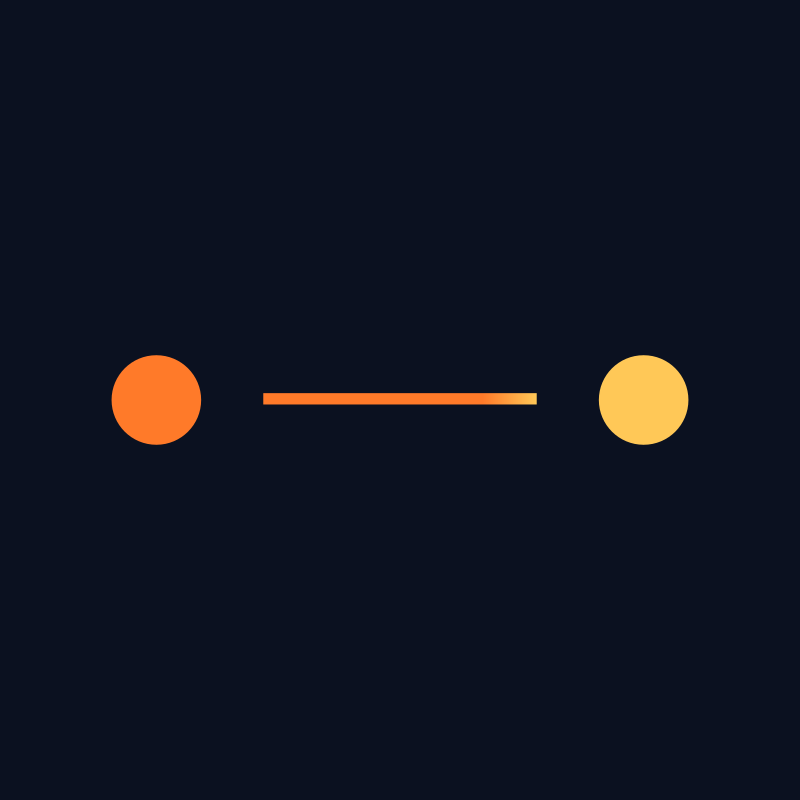

GUIDE_01↗
Auditer son code avec Cloudflare
Installe le skill security-audit dans Claude Code ou Codex, lance un premier audit et apprends à lire les résultats.

ENTRE DEUXDE LA VIDÉO À LA PRATIQUE
Les étapes, les captures et les liens utiles.
Tous les guides Entre Deux Commits sont ici.
À LIRE EN LIGNEÀ GARDER EN PDF
2 guides disponibles
Installe le skill security-audit dans Claude Code ou Codex, lance un premier audit et apprends à lire les résultats.
Du téléchargement à ta première voix : installe VoiceStudio sur Windows et prépare ses modèles, étape par étape.
Aucun guide pour cette recherche.